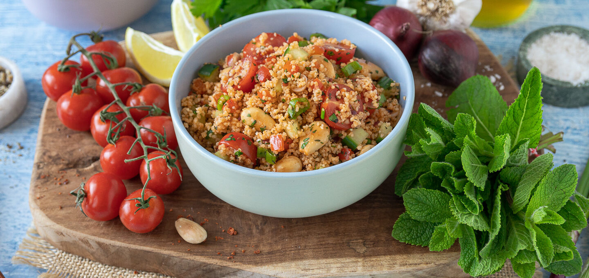

Kisir (Bulgursalat)

Zubereitung
Zuerst das Öl erhitzen und die Zwiebel darin glasig anbraten. Nicht
braun werden lassen. Das Tomaten- und Paprikamark ein paar Sekunden mit
anschwitzen und beiseitestellen. Wasser kochen und kochend über den
Bulgur gießen. Das Ganze zusammen mit dem Salz so lange umrühren, bis
der Bulgur alles aufgesogen hat. Tipp: Ich mache beim Rühren immer
wieder eine Bissprobe, ob es al dente ist. Evtl. etwas weniger oder mehr
Wasser nehmen. Es ist wie beim Reis - manche Bulgursorten brauchen mehr,
manche Sorten weniger Wasser. Dann die Zwiebel-Öl-Tomatenmark-Mischung
dazugeben und mit dem Zitronensaft und Granatapfelsirup vermengen. Tipp:
Wer keinen Granatapfelsirup auftreiben kann (gibts beim türkischen
Lebensmittelhändler), kann es vielleicht durch ein wenig Aceto balsamico
ersetzen. Dann aber mehr Zitronensaft nehmen. Ich habe es selber so
nicht ausprobiert. Übernehme daher keine Gewähr wenn's dann nicht so
schmeckt wie es soll. Zum Schluss noch die Frühlingszwiebel und die
Petersilie untermengen und mit Pfeffer abschmecken. Anmerkung:
Normalerweise mache ich es nach Augenmaß, aber weil so viele das Rezept
schon haben wollten, habe ich mir die Mühe gemacht alles nach und nach
abzuwiegen. Ich würde trotzdem empfehlen, zwischendurch immer wieder zu
probieren und nach eigenem Geschmack zu variieren.
Rezept erstellt von
 Semih
Semih